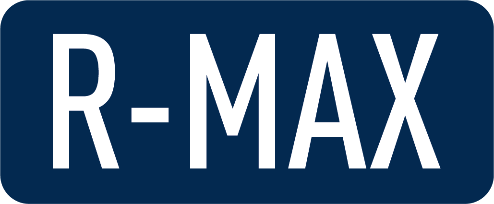

 www.bpw-ost.ru
R-MAX - бренд компании ООО «БПВ-Ост», под которым производится и поставляется целый ряд компонентов для коммерческого транспорта: от пластиковых крыльев до надстройки для шторного полуприцепа.
Компоненты бренда R-MAX, разработанные на базе знания потребностей рынка, производятся в соответствии с высокими стандартами качества, принятыми в компании.